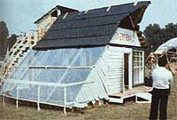

The Vienna Technology Forums
January/February 1980
MOTHER's own Copthorne Macdonald recently returned from an extended European trip. During his travels, he attended the U.N. Conference of Science and Technology for Development (UNCSTD) in Vienna . . . the Non-Governmental Organizations Forum (NGO Forum) held in the same city . . . and Britain's Community Technology Festival (COMTEK). The following article is the first of a series of reports from Cop on these attempts to determine how technology (both hard and soft) can best meet the needs of the world's people.
Just imagine for a moment that you're a government official in a poor land ... a country where many babies don't live to see their first birthday. Given the opportunity, you'd certainly be willing to make a deal with a multinational corporation to have that firm build a pharmaceutical plant in your nation ... especially if the company agreed to limit the plant's profits to a reasonable level above its costs. After all, such an arrangement would provide your people with a reliable supply of inexpensive drugs ... which might help save some of those children from dying, right?
Wrong! You see, the "fine print" in the arrangement says that the "raw" chemicals used by the pharmaceutical plant must be purchased from other companies owned by the same corporation. Now you might have thought the stipulation unimportant during the negotiations, but the truth of the matter is that the supplier firms will probably charge up to 1,000% more than the open market price for the raw materials ... so the finished medicines won't be inexpensive at all!
Unfortunately, this example isn't some far-fetched, barely possible scenario. It's an only slightly modified case history of one of the many rip-offs perpetrated against developing countries by multinational corporations. It was in the hope of eliminating at least a portion of just such injustices-and, in effect, of getting a technological "fair deal" from the rich lands that are the home base for most international corporations-that representatives of 120 have-not nations banded together at the U.N. Conference of Science and Technology for Development.
SMALL CONCESSIONS (OR NONE AT ALL)
Although the United States (as well as many other developed countries) claims to be perfectly willing to share its technology with poor nations, the fact is that-in western lands, at least-the governments don't often own much technology. Instead, such knowledge is usually in the hands of large corporations . . . and is only sold by the firms at their price and on their terms.
The have-not countries that attended UNCSTD (they were represented by a coalition called the Group of 77) hoped to eliminate the unfairness that's a part of many transfers of technology from wealthy lands to poor ones. However, their initial proposal (which would have resulted in a binding international agreement to eliminate the monopolistic and exploitative practices of multinational corporations) was defeated.
A second issue that concerned the impoverished nations was the question of distribution of research and development funds. The latest U.N. figures show that international firms spend almost $100 billion each year-worldwide-on R & D . . . but that only 3% of the money is spent in the poor lands that could best benefit from the extra income. The Group of 77 hoped to obtain a commitment-on the part of rich nations-to use their influence to raise this share to 7%. In the end, however, the requested 4% increase was whittled down so severely that have-not lands had to settle for less than a 0.5% larger share of the research and development "pie".
Perhaps the single most positive accomplishment of the entire U.N. Conference was an agreement to establish a worldwide information sharing system that would benefit Third World people. The developed countries voted to provide "the fullest possible access to available information on the technologies, terms and conditions of supply, and activities of transnational corporations and enterprises in the fields of science and technology". The agreement sounds wonderful, but such words as "possible" and "available" tend to be hard to get a grip on. We can only wait and see whether national governments will, indeed, force multinational corporations to divulge any significant information.
ALTERNATIVE GATHERINGS
While all the power at UNCSTD was in the hands of the various national governments (which often don't, as you know, consider the needs of their poorest citizens), there were two "counter conferences" in Vienna where the human side of technology could be-and was-discussed.
The first was the Non-Governmental Organization Forum, which provided a meeting place for 1,400 representatives of 360 organizations and information networks concerned with technological development as it relates to filling basic human needs. Among the groups represented were the International Foundation for Science, the Max Planck Institute, Friends of the Earth, the Sierra Club, and our own New Directions Radio Network.
Of course, the NGO Forum didn't have any appreciable influence on the nationtonation proceedings that took place in UNCSTD, but it did provide its participating organizations with an opportunity to exchange ideas about how each one can best influence its own government toward honesty and responsiveness to the needs of the world's poor ... and how the groups can bypass governments and work, themselves, to solve specific human problems.
THE ALTERNATIVE FORUM AND VIENNA'S "ECO-VILLAGE"
The second of Vienna's "counter-conferences" was called the Alternative Forum. It was the brainchild of a coalition of Austrian groups and individuals-concerned with alternative lifestyles, energy, etc.-who managed to talk Vienna's city fathers into setting aside part of an urban park as the site for a temporary "ecological village" (called "Oko-Dorf").
The community was built in less than two weeks-by a small number of people using scrap materials-and it may not have been quite what Viennese officialdom had in mind. Oko-Dorf did, however, provide a gathering place for interested men and women from around the world.
In addition, the ecological village was the site of a number of informal workshops, organized by a group called Community Action Europe. These courses were divided into four basic groups of topics classified under the labels "Earth", "Air", "Fire", and "Water".
The Earth group wrestled with the problems of food, housing, health, and alternative economic systems . . . Air dealt with communications and organizations ... Fire centered on energy . . . and Water discussed children and human relationships in general.
Oko-Dorf was a place of celebration and art, too. One evening, for example, the Buffalo Child Society (a group of Cree Indians from western Canada) put on a series of their traditional tribal dances. On the following night, the Mullkraft Theatre from Stockholm, Sweden-performed its "Energy Ballet": a mythical tale that began with the original connection of fire and hearth . . . then depicted the use of fire for destructive purposes and the transformation of the wheel of community into the wheel of industry. Such changes the program warned-could result in tragedy for us all.
In summary, a lot more was accomplished-and more helpful knowledge changed hands-at the meetings outside UNCSTD than within that United Nations gathering. I'll detail some of the information ( and report on Britain's Community Technology Festival) in the next few issues of MOTHER.
|
The United Nations Conference of Science and Technology for Development (UNCSTD) proved generally unresponsive to the needs of the world's poor nations. |
At the Non- Governmental Organization Forum, however, attention was directed to human problems. |
Cultural programs from around the globe . . . |
|
 Alternative energy displays (with an emphasis on passive solar applications) . . . |
Low-cost shelter (such as the yurt that's under construction here) were all part of . . . |
 Oko-Dorf, Vienna's own community-built temporary ecological village! |